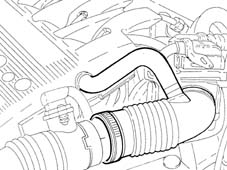

1072OA INLET AND EXHAUST SYSTEM SEAL CHECK
- Path
- Test > 10 ENGINE UNIT > 1072 INLET AND EXHAUST MANIFOLDS > 1072O INLET AND EXHAUST MANIFOLDS TESTS > 1072OA INLET AND EXHAUST SYSTEM SEAL CHECK
- Kind
- test / check procedure
- Applies to
- engines: 1.8 T.SPARK; all production periods
- Interactive page
- https://sloeber94.github.io/elrnDB-aGt/en/#/125000759
Applies to: engines: 1.8 T.SPARK; all production periods
Position the vehicle on a lift.
Working via the engine compartment, disconnect the battery.
Release the air flow meter hose band and detach it
Op. 1056B09 MISURATORE PORTATA ARIA A FILM CALDO (DEBIMETRO) - S.R.

Fit buffer C10125 on the hose and secure it using a band.

Remove the bolts fixing the catalyzer to the centre silencer.
Remove the two bolts for the catalyzer mounting and lower it.
Fit the flange C10126.

Connect the air intake pipe to the pressure regulator network.
Close the regulator tap and calibrate it at a pressure of 0.4 bar.
Connect the regulator outlet pipe to buffer C10126.
Open the regulator tap.
Check for any air seepage through a decrease in pressure.
Locate the leaks using special foam.